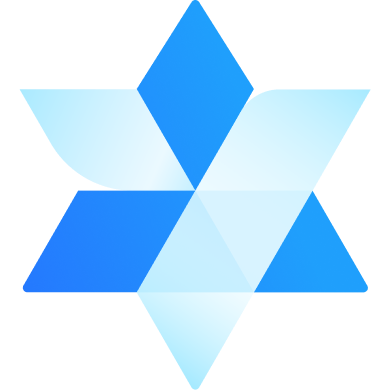

קיר הכוכבים החי
מסך גדול באולם שמציג את הרשת גדלה. כל היכרות חדשה מציירת קו זהב, וכל מעגל שיח מאיר קבוצת כוכבים. בסוף היום — צילום אחד של כל החיבורים שנוצרו.

קרן יעל הרשמההכנס השנתי למנהלות ולמנהלי בתי ספר
כל מנהל ומנהלת הם כוכב. כשמחברים ביניהם — נוצרת רשת.
הרעיון
ניהול בית ספר הוא תפקיד בודד. הכנס השנה לא נגמר בסוף היום: הוא מחבר בין מנהלים לפי האתגרים והחוזקות שלהם, כבר מההרשמה, וממשיך אחריה.
בהרשמה כל מנהל מספר במה הוא מתמודד, במה הוא חזק ומה הוא מחפש. המערכת מציעה 3 חיבורים ראשונים — אנשים שכדאי להכיר עוד לפני שנפגשים.
סריקת QR בין שני משתתפים יוצרת קו חדש במפה. מסך ענק באולם מציג את הרשת גדלה בזמן אמת, ומעגלי שיח מורכבים לפי נושאים משותפים.
קבוצות עמיתים קטנות לפי נושא, מפגש חודשי קצר ומאגר פתרונות שנולדו מהשיחות — כדי שהקשרים לא ייעלמו ביום שאחרי.
מפת הכוכבים
כל נקודה היא מנהל או מנהלת. קו ביניהם אומר שהם חולקים לפחות שני אתגרים. בחרו נושא כדי לראות מי עוסק בו.
משתתפים לדוגמה · השמות והנתונים בדויים
החיבורים שלי
ההתאמה מחושבת מיד, בלי לשלוח את הפרטים שלכם לשום מקום. ניסוח אישי ב-AI מופעל רק כשתבקשו.
ביום הכנס
רעיונות לחוויה במקום — כל אחד מהם יכול להיבנות על אותו אתר ואותה רשת.
מסך גדול באולם שמציג את הרשת גדלה. כל היכרות חדשה מציירת קו זהב, וכל מעגל שיח מאיר קבוצת כוכבים. בסוף היום — צילום אחד של כל החיבורים שנוצרו.
לכל משתתף תג עם קוד אישי. סריקה הדדית שומרת את איש הקשר ומוסיפה קו למפה — בלי כרטיסי ביקור.
שולחנות של 6–8 מנהלים שהורכבו מראש לפי אתגר משותף, עם שאלת פתיחה ומנחה מהקרן.
לוח שבו מנהלים מעלים שאלה אמיתית מבית הספר, ועמיתים שכבר פתרו אותה מסמנים ״אני יכול לעזור״.
לו״ז הכנס בנייד, עם תזכורת ״את מי כדאי לפגוש בהפסקה הבאה״ לפי החיבורים שלך.
אחרי הכנס
4–6 מנהלים סביב נושא אחד, מפגש זום של 45 דקות פעם בחודש. הקרן פותחת, המנהלים מובילים.
פתרונות קצרים שעלו בשיחות, מתויגים לפי נושא — לחיפוש מהיר כשאותה בעיה מגיעה לבית ספר אחר.
הפרופיל נשמר. בכנס הבא רואים איך הרשת האישית גדלה ומי הצטרף אליה.
״הרעיון הכי טוב שהיה לי השנה הגיע ממנהלת שפגשתי בהפסקת קפה.״
מנהלת תיכון, משתתפת בכנס הקודם · ציטוט לדוגמה